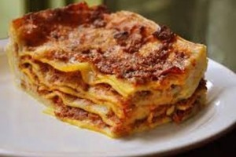
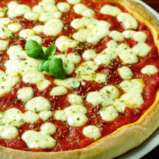

Pentru ca mancarea este indispensabila omului , va prezint mancarurile mele preferate :
Lasagna
Ingrediente:
250g foi de lasagna
600g carne (vita, porc, pui)
sos de rosii
1 ceapa medie
1-2 morcovi rasi
60g unt
2 linguri faina
400ml lapte
sare, piper
busuioc, oregano
nucsoara, usturoi granulat
ulei de masline
100ml vin rosu sec
1
2
3
Lasagna
Mod de preparare:
Intotdeauna sosul bolognese se prepara primul, deoarece are nevoie de un timp mai mare de gatire. Pentru acest sos, tocam in primul rand carnea si ceapa. Radem morcovul pe razatoarea mica. Le calim in 2 linguri de ulei de masline, pana cand carnea capata culoare. Imediat ce apa lasata de carne scade, adaugam condimentele (busuioc, oregano, sare, piper, usturoi granulat), cam cate o lingurita rasa din fiecare (atentie la piper!!),sosul de rosii si cam o jumatate de pahar de vin rosu sec. Totul se fierbe la foc mic o ora, amestecand din cand in cand in vas.
Sosul bechamel se face foarte rapid, se amesteca continuu, ca sa nu se prinda si sa nu se formeze cocoloase. Se topeste untul. Se da cratita la o parte de pe foc si se incorporeaza faina. Se pune cratita la loc pe foc si incepem sa adaugam laptele, putin, cate putin, amestecand de preferat cu un tel in forma de para. Sosul bechamel se fierbe pana capata consistenta smantanei. Se condimenteaza cu sare, piper alb, nucsoara.
Urmeaza partea cea mai simpla. Intr-un vas termorezistent punem in strat de sos bechamel, un strat de foi de lasagna, un strat de sos bolognese. Ultimul strat trebuie sa fie de sos bechamel, peste care se pune un strat generos de branza/cascaval ras. Se introduce la cuptor si se coace timp de 45-50 minute la 180 grade.
1
2
3
Lasagna

Pofta buna!
1
2
3
Pizza
Ingrediente:
2 linguri faina
1/8 lingurita praf de copt
1 varf de cutit de sare
1 lingurita unt
2 1/4 lingurita lapte
1 lingura sos pentru pizza
1 1/2 linguri mozzarella rasa
1
2
3
Pizza
Mod de preparare:
Amestecati impreuna intr-un castron faina cu praful de copt, sarea si untul, astfel incat sa obtii un aluat. Invata-l pe micutul tau urmatorul pas: laptele trebuie turnat incet, in timp ce amesteci in continuare in compozitie.Pregateste apoi o tava pentru cuptor, pune aluatul, apoi lasa-l pe cel mic sa-l unga cu sos pentru pizza. Poti folosi, de exemplu, o combinatie de suc de rosii cu busuioc. Apoi finalizati totul presarand branza rasa. Daca vrei sa adaugi si alte ingrediente, acum este momentul: rosii, ardei gras, salam , sunca etc.In cazul in care vrei ca pizza sa aiba un aspect simpatic, turteste cateva mingi de mozzarella si fa-le ochi si gura din masline, ardei etc.
Da pizza la cuptor cam 20 de minute.
1
2
3
Pizza

Pofta buna!
1
2
3
Sarmale
Ingrediente:
1 kg carne tocata amestec vita si porc
2 verze murate
3 buc ceapa
80 ml ulei
200 gr orez
100 gr bulion
10 gr delicat de legume
cimbru
sare
marar uscat
1
2
3
Sarmale
Mod de preparare:
Se spala varza, se curata de cotor, se aleg foiile pentru sarmalute. Inima verzei se toaca marunt si se asaza pe fundul vasului impreuna cu mararul uscat.Ceapa se curata, se spala, se toaca marunt si se caleste in ulei. Se adauga orezul, bulionul, delicatul si se lasa 2 min pe foc. Se ia apoi si se lasa la racit.Se adauga carnea si cimbrul, sare dupa gust. Se amesteca bine. Aceasta compozitie se imparte pentru fiecare foaie de varza, de marimea unei caise.Se impaturesc sarmalutele, introducandu-se capetele in interior. Se asaza in vasul randuri, randuri, de forma petalelor de floare. Deasupra se pune niste varza tocata, se adauga apa astfel incat sa le acopere. Se introduc la cuptor si se lasa 2 ore. Daca mai este nevoie, se adauga apa.
Se servesc alaturi de mamaliguta, smantana, ardei.